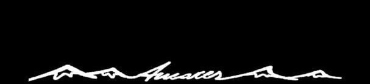

Historia
Fauna
Flora
Orografia
Rutas
Pueblos
Pereda
Villarbon
Tejedo
Contacto
Contacto
UBICACION:
SERVICIOS:
MAPA:
CONTACTO:
Sorbeira
Alojamiento
Restaurante
Calle Carretera 1;
24433 Sorbeira, León
987564292
Pereda
Alojamiento
Cafetería
Restaurante
Calle Cancelas, 4, 24433 Pereda de Ancares, León
987564284
http://www.valledeancares.com/
Candin
Alojamiento
Carretera nº7, 24433 Candín, León
+34689396187
http://www.planetancares.es/
Tejedo
Alojamiento
Restaurante
c/ La Cuesta 1-3, 24433 Tejedo de Ancares, León
+34987564288
http://www.elrincondelcuco.com/
Suertes
Alojamiento
Restaurante
Actividades
Real, 7, 24433 Suertes, León
+34680500650
Real, 7, 24433 Suertes, León
https://ancaresrural.es/
Balouta
Alojamiento
Restaurnate
Cafeteria
C/ Carretera de Ancares, s/n, 24433 Ancares Leoneses, León
+34987689989
http://www.ctrmiravalles.com
Suarbol
Alojamiento
Restaurante
Calle Real, 24433 Suárbol, León
+34627962035